Börja med att välja en höjd. Detta blir polygonens takhöjd, mätt från marken den står på.
Klicka på “Börja rita”, och enkelklicka sedan på minst 3 punkter på kartan.
Dubbelklicka för att fastställa och visualisera polygonen.
Zooma in kartan så att du kan överblicka det område du vill mäta inom.
Klicka på det verktyg du vill använda.
Enkelklicka för att sätta ut enskilda punkter, och dubbelklicka för att fastställa din mätning.
Välj en tid och datum, och klicka på "Aktivera skuggor".
Zooma in på kartan så att du kan se enskilda byggnader.
Justera tid och/eller datum för att se hur skuggorna förändras över tid.
Zooma in så att du kan överblicka det område du vill mäta inom.
Låt terrängen rendera färdigt för att få en så exakt mätning som möjligt.
Klicka på "Rita linje" och klicka sedan ut 2 punkter på kartan att mäta i mellan.
Klicka på "Aktivera siktverktyget" och välj sedan en utgångspunkt genom att klicka på kartan.
Peka och klicka där du vill fästa blicken.
Allt som färgas grönt är synligt från utgångspunkten, och allt som färgas rött är utom synhåll.
Gör dina förval och aktivera siktverktyget. Klicka sedan på kartan för att välja en utgångspunkt följt av en siktpunkt.
Dra och släpp kameran för att flytta utgångspunkten till en ny position. Dra och släpp siktet för att vrida/rotera kameran.
Allt som färgas grönt är synligt från utgångspunkten, och allt som färgas rött är utom synhåll.